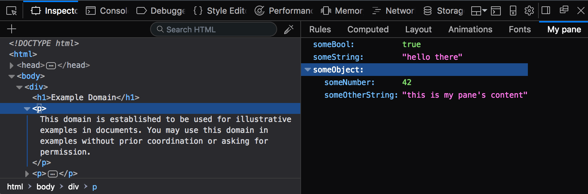

The ExtensionSidebarPane object represents a pane that an extension has added to the sidebar in the browser's HTML/CSS inspector.

To create an ExtensionSidebarPane, call the browser.devtools.panels.elements.createSidebarPane() function.
devtools.panels.ExtensionSidebarPane.setExpression()Evaluate a JavaScript expression in the web page that the inspector is inspecting. The result is displayed in the sidebar pane.
devtools.panels.ExtensionSidebarPane.setObject()Sets a JSON object that will be displayed in the sidebar pane.
devtools.panels.ExtensionSidebarPane.setPage()Loads the page pointed to by the supplied URL.
devtools.panels.ExtensionSidebarPane.onShowndevtools.panels.ExtensionSidebarPane.onHidden{{Compat}}
{{WebExtExamples("h2")}}
This API is based on Chromium's chrome.devtools.panels API.
// Copyright 2015 The Chromium Authors. All rights reserved. // // Redistribution and use in source and binary forms, with or without // modification, are permitted provided that the following conditions are // met: // // * Redistributions of source code must retain the above copyright // notice, this list of conditions and the following disclaimer. // * Redistributions in binary form must reproduce the above // copyright notice, this list of conditions and the following disclaimer // in the documentation and/or other materials provided with the // distribution. // * Neither the name of Google Inc. nor the names of its // contributors may be used to endorse or promote products derived from // this software without specific prior written permission. // // THIS SOFTWARE IS PROVIDED BY THE COPYRIGHT HOLDERS AND CONTRIBUTORS // "AS IS" AND ANY EXPRESS OR IMPLIED WARRANTIES, INCLUDING, BUT NOT // LIMITED TO, THE IMPLIED WARRANTIES OF MERCHANTABILITY AND FITNESS FOR // A PARTICULAR PURPOSE ARE DISCLAIMED. IN NO EVENT SHALL THE COPYRIGHT // OWNER OR CONTRIBUTORS BE LIABLE FOR ANY DIRECT, INDIRECT, INCIDENTAL, // SPECIAL, EXEMPLARY, OR CONSEQUENTIAL DAMAGES (INCLUDING, BUT NOT // LIMITED TO, PROCUREMENT OF SUBSTITUTE GOODS OR SERVICES; LOSS OF USE, // DATA, OR PROFITS; OR BUSINESS INTERRUPTION) HOWEVER CAUSED AND ON ANY // THEORY OF LIABILITY, WHETHER IN CONTRACT, STRICT LIABILITY, OR TORT // (INCLUDING NEGLIGENCE OR OTHERWISE) ARISING IN ANY WAY OUT OF THE USE // OF THIS SOFTWARE, EVEN IF ADVISED OF THE POSSIBILITY OF SUCH DAMAGE.